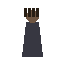

Playable prototype · Active development01
2D Narrative Game
Fogbound Demo
What if the rules of a fictional universe became the rules of the game?
Fog, memory, words, and perception become interconnected systems as J navigates the world after 18:21. Whisper Vows offer power at a thematic cost.